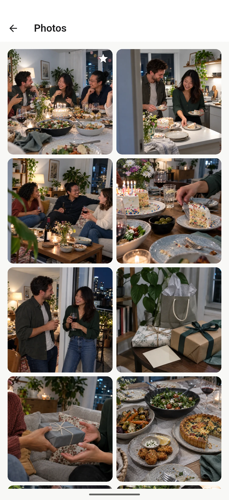
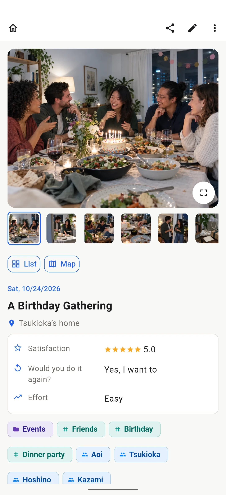
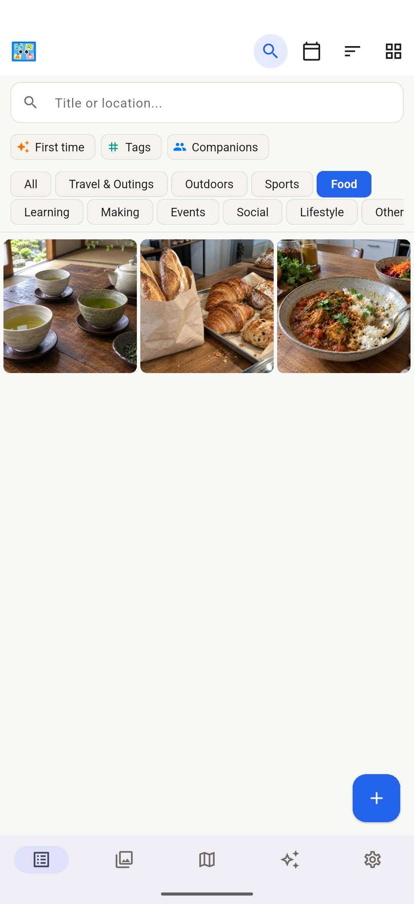
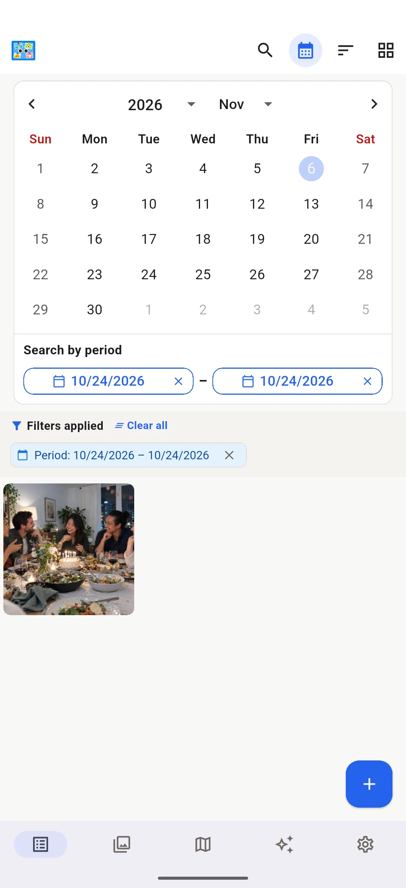
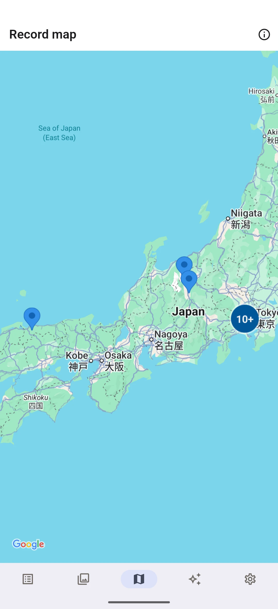
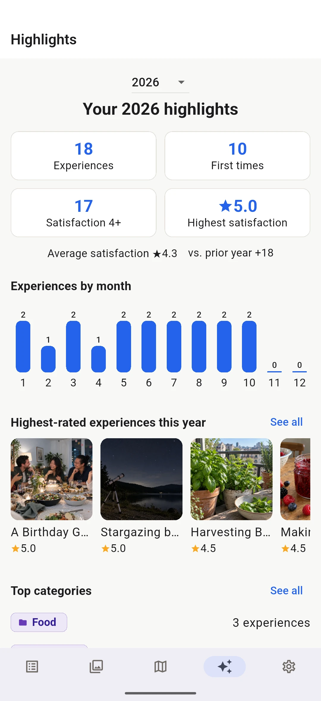
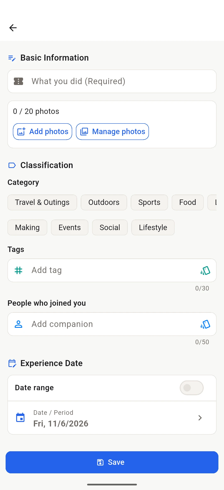

A clear record of each experience
Keep what you did, when and where, your notes, tags, and the people you shared it with.
YattaMon · EXPERIENCE & PHOTO JOURNAL
From trips and hikes to ordinary weekends, save each experience with photos and notes, then enjoy looking back on it.

LOOK BACK
Places you've visited, new things you've tried, and time spent with friends. Save each experience and revisit it through photos, calendars and maps.
ALL IN ONE
Keep what you did, when and where, your notes, tags, and the people you shared it with.
Choose a cover photo and keep the pictures from each experience together.
Browse photos grouped by experience, then search or filter to find a memory again.
When a photo has GPS data, see where it was taken and explore nearby memories.
Look back on your experiences, firsts, ratings, and the moments that made your year.
Combine photos into one image and share a favorite memory with friends.
APP SCREENS
Browse experiences in chronological order. Choose one of four layouts to focus on photos or details.
Browse photos grouped by experience, then open an entry to revisit its pictures, notes, location and rating.


Search by name or place, then filter by category, tag, companion or first-time experience. Use the calendar to browse by date.


When your photos include location data, see where each memory happened. Tap a record on the map to open its details.

PHOTO JOURNAL
Follow your experiences in a timeline, browse photos like an album, or revisit places on a map.

Start with what you did, then add a date and photos. Keep notes, ratings, first-time moments and whether you'd do it again.

PRIVACY & YOUR DATA
Your records and photos stay on your device. No account or cloud sync is needed. Export or restore a ZIP backup whenever you choose.
YattaMon